历史 · 老地图与老照片
看看这座城市昔日的模样。
将 1850、1900、1925 或 1950 年的街道地图与今天的卫星视图渐变叠加。按下“时光漫步”，随着游览推进，地图会切换到每座地标建成的年份。
- 来自公共档案馆的老照片，每张都注明出处，其中 17 张来自密歇根州立大学档案馆，22 张来自底特律公共图书馆，均经许可分享
- 向地标提问并聆听回答，由 Apple Intelligence 支持
- 走进过去：公有领域影片和城市老照片
- 游览时响起的城市街头声音
- 历史上的今天：应用中的地标今天发生过什么
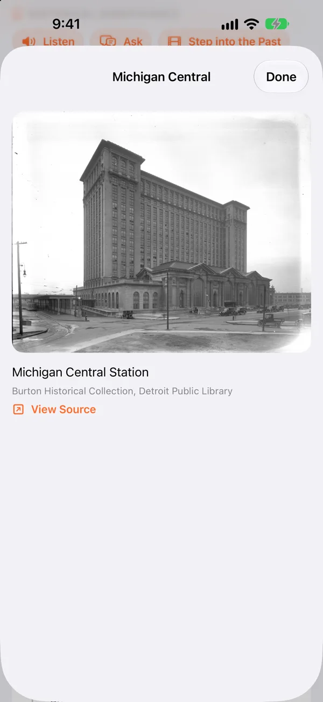
使用方法
探索，出发，盖章。
-
足不出户去探索
在逼真的 3D 中飞越 166 座城市，阅读每座建筑背后的故事。
-
规划行程
按天安排地标，添加酒店和用餐地点，并用 3D 预览路线。
-
集满你的护照
每到一处地标就获得一枚印章，盖满一座城市的所有地标即可精通该城市。
探索 · 逼真 3D + 四处看看
从空中，到街头。
卫星影像叠加真实的建筑高度。点按图钉，镜头直接飞过去；也可以开启导览之旅，自动在各个地标之间飞行。然后降落到街头，在到达之前就看清建筑的真实模样。
- 在地图卡片上就能按步行顺序逐个浏览地标
- 按未到访、已盖章、想去的地方和建筑风格筛选
- 美食、咖啡、文化和住宿的快捷标签
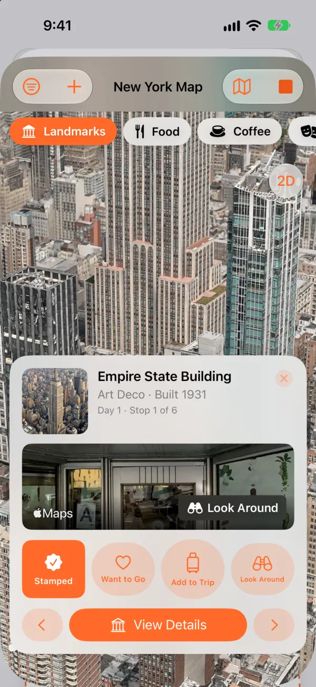
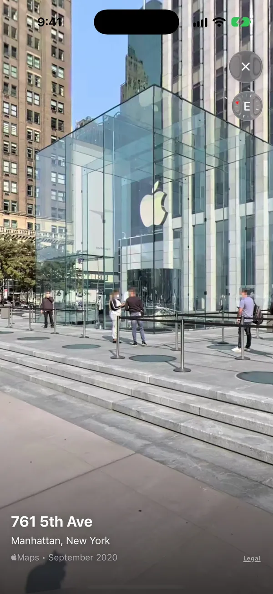
导览之旅 · 在应用中录制
按下播放，一路飞行。
导览之旅会自动在地标之间飞行，每一站都有卡片和“四处看看”预览。
六大洲 · 166 座城市
所有航班能到的大洲，这里都有。
不只是常见的首都。Stamped! 涵盖 166 座城市，从雷克雅未克到桑给巴尔，每座城市都有自己的地标、测验和印章。
波尔图、克拉科夫，到广岛、河内，另外 10 座城市将在下次更新中上线。
应用内一览 · 2,400 多处地标
一些等着你的地标。
点开任意一处，即可进入城市指南（英文），了解建筑师、建成年份和背后的故事。
-
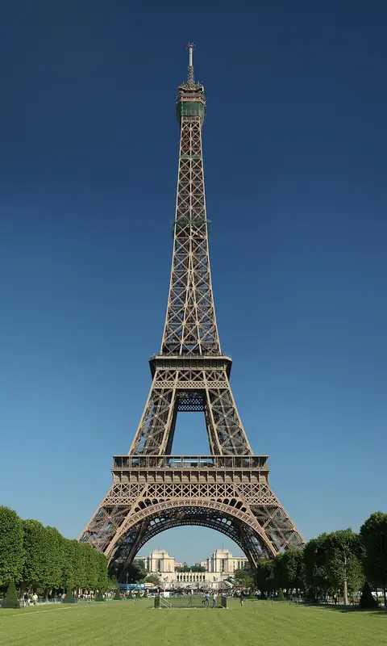
埃菲尔铁塔巴黎 摄影：Benh LIEU SONG, Public domain - 罗马斗兽场罗马 摄影：FeaturedPics, CC BY-SA 4.0
-
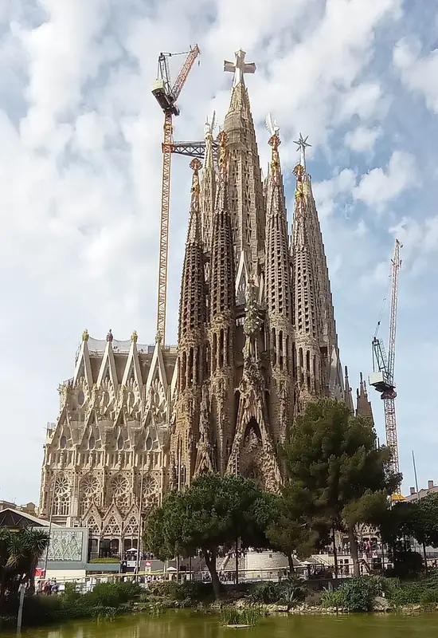
圣家堂巴塞罗那 摄影：Canaan, CC BY-SA 4.0 - 吉萨大金字塔开罗 摄影：Douwe C. van der Zee, CC BY-SA 4.0
- 悉尼歌剧院悉尼 摄影：Bernard Spragg. NZ from Christchurch, New Zealand, CC0
-
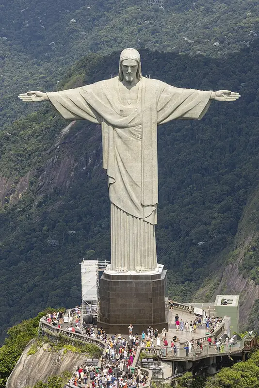
基督救世主像里约热内卢 摄影：Arne Müseler, CC BY-SA 3.0 de -
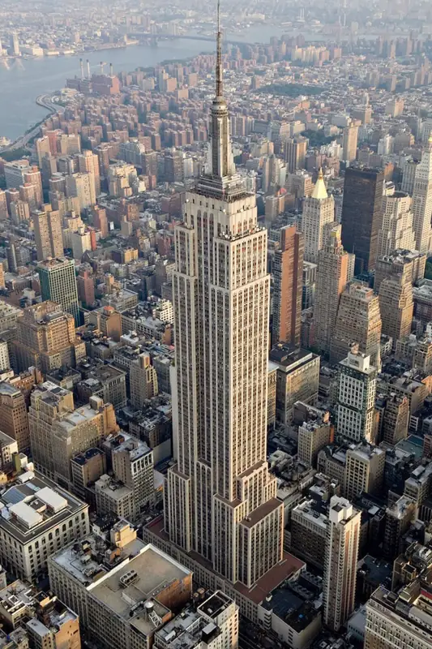
帝国大厦纽约 摄影：Sam Valadi, Public domain - 金阁寺京都 摄影：Nacaru, CC BY-SA 4.0
- 圣索菲亚大教堂伊斯坦布尔 摄影：Adli Wahid, CC BY-SA 3.0
- 双子塔吉隆坡 摄影：James Kerwin from Tbilisi, CC BY 2.0
- 流水别墅匹兹堡 摄影：lachrimae72, CC0
- 哈尔格林姆教堂雷克雅未克 摄影：Steinninn, CC BY 4.0
.jpg){kind=link}


.jpg){kind=link}

.jpg){kind=link}

.jpeg){kind=link}
_(cropped)_2.jpg){kind=link}


发现 · 建筑背后的人
认识建筑师。
每处地标都附有建筑师、风格、建成时间、高度和历史。点按建筑师，即可在应用中查看他的所有建筑。Stamped! 会记录你看过谁的建筑，并显示你最喜欢的建筑师。
- Frank Lloyd Wright34
- Oscar Niemeyer16
- Frank Gehry15
- I. M. Pei17
- Zaha Hadid15
- Herzog & de Meuron13
- Mies van der Rohe8
- Renzo Piano7
- Jean Nouvel7
- Santiago Calatrava11
- Le Corbusier13
- Antoni Gaudí3
- Adrian Smith3
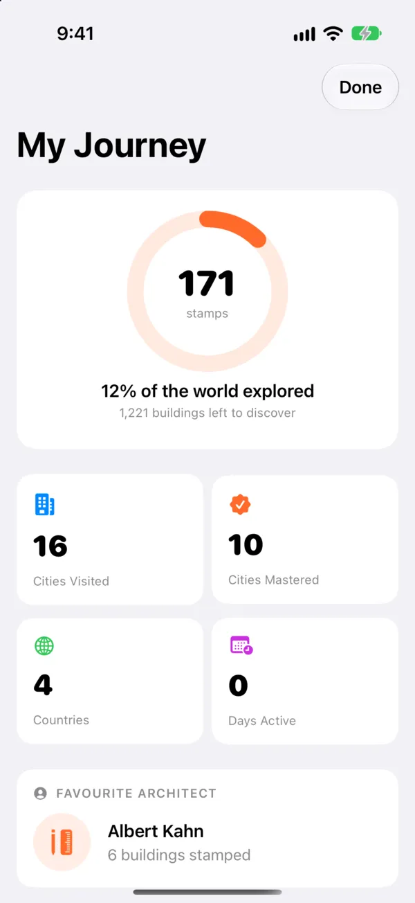
玩 · 建筑测验
考考你的见识。
每座城市和每个校园都有一套 10 道题的测验，题目来自真实的地标：风格、建成年份、建筑师、楼层数。共 288 套测验，支持 9 种语言。可以点按作答，也可以大声说出答案。
熨斗大厦有多少层？
试一试，只有三道题。
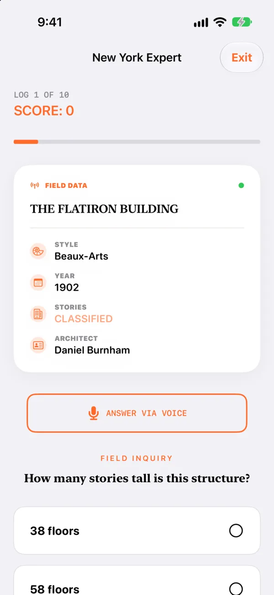
规划 · 行程
旅行计划，逐日安排。
用地标和你保存的地点安排几天的行程，出发前先在 3D 地图上飞一遍。
- 重新排序站点，查看步行时间，一键优化路线
- 从苹果地图添加任意餐厅、商店或场馆
- 按你的日期搜索酒店，为每一晚找到住处
- 行程通过 iCloud 在 iPhone、iPad 和 Mac 之间同步
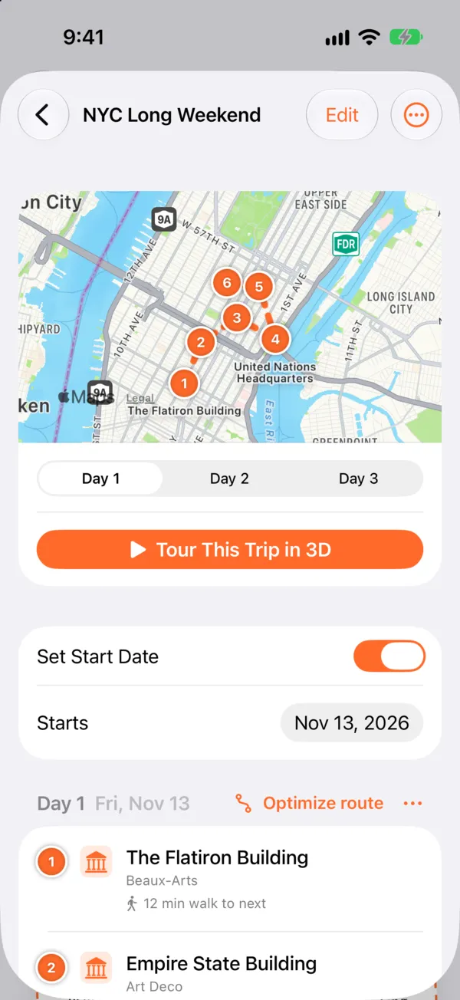
每座城市的页面
落地之后，所需一切都在这。
每座城市的页面都回答了“接下来做什么？”，你不用再装另外五个应用。
-
酒店
每处地标附近的酒店，附街景照片，还能按你的出行日期搜索酒店。
-
用餐
每处地标附近的餐厅及步行时间，还有美食之旅和地图上的咖啡店。
-
活动
提前六个月的演唱会、演出和比赛，部分城市还有图书馆和博物馆的活动日历。
-
天气
你正在探索的城市的天气预报。
-
货币
当地货币的快速换算。
-
机场
主要机场、机场代码，以及值得一看的亮点。
-
打招呼
用当地语言怎么问候别人。
-
想去的地方
给任意地标或苹果地图地点点上爱心，留着以后去。
Apple Vision Pro · 空间
置身地标之中。
在 Apple Vision Pro 上，每座城市都以逼真的 3D 地图悬浮在你的房间里，你在 iPhone 上收集的印章也会同步过来。
- 包含所有城市的 3D 地球仪，已盖章的地点以实时图钉显示
- 360° 全景：置身 26 处地标之中
- Play Tour：配有解说的飞行之旅，在地标之间飞行
- 完整的 3D 底特律，需要时才下载
- 通过 SharePlay 一起探索，FaceTime 通话中的朋友可以和你一起飞越城市
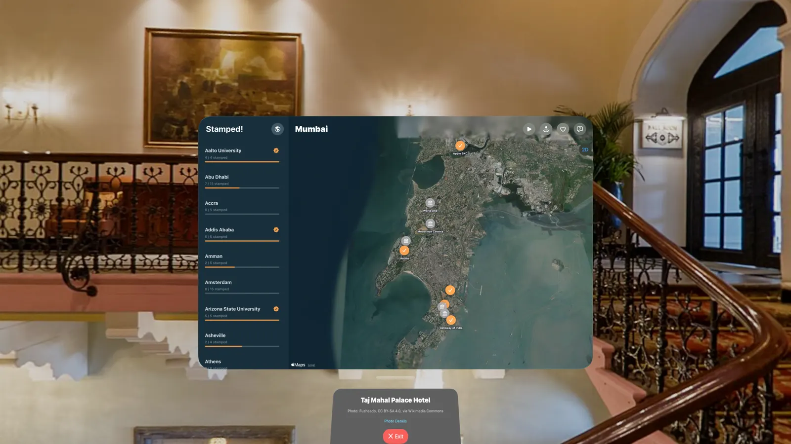
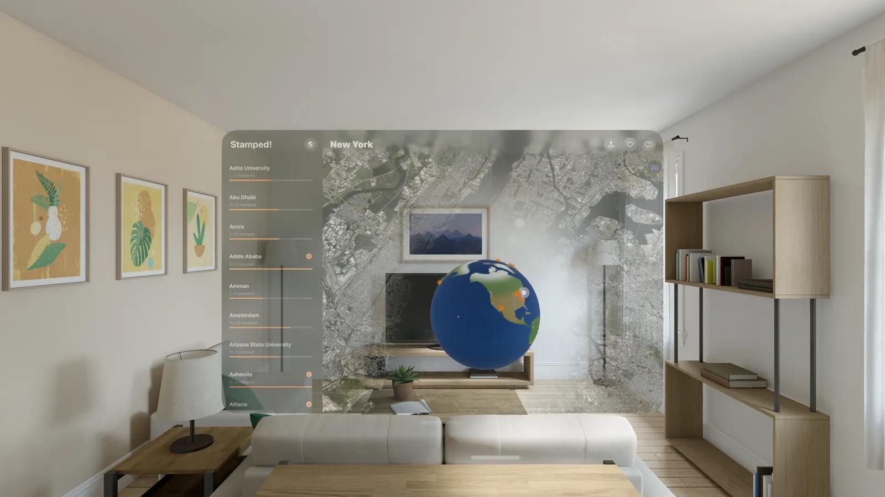
适合大学参观 · 2.7 新功能
计划参观大学？交给 Stamped! 来规划。
保存你家人正在看的学校，Stamped! 会把它们排成一次公路旅行：每天一个校园，按较短的驾车顺序。涵盖十大联盟、东南联盟、大西洋沿岸联盟和十二大联盟的全部学校、常春藤盟校，以及从牛津到墨尔本的杰出校园。
- 开车前先用 3D 游览每个校园
- 直接打开各校官方参观页面
- 查看美国院校的热门专业和平均净价
- 了解标志性建筑及其背后的故事
- 勾选学生真正会做的传统，比如摸摸幸运雕像
- 了解每所学校的历史，查看即将举行的主场比赛，浏览校园活动
- iPhone、iPad 和 Mac 免费使用，行程通过 iCloud 同步
- Big Ten
- SEC
- ACC
- Big 12
- Ivy League
- + 全球各地
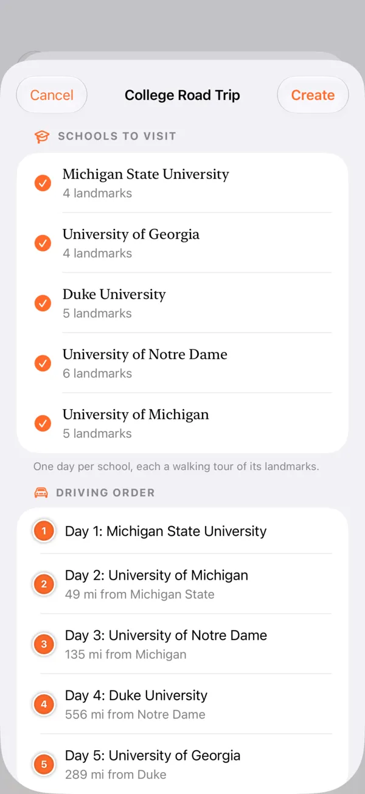
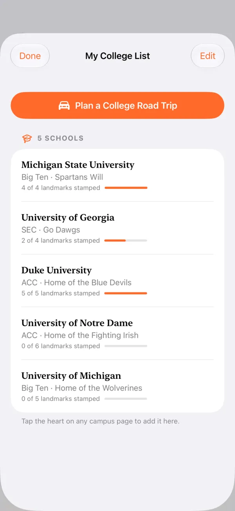
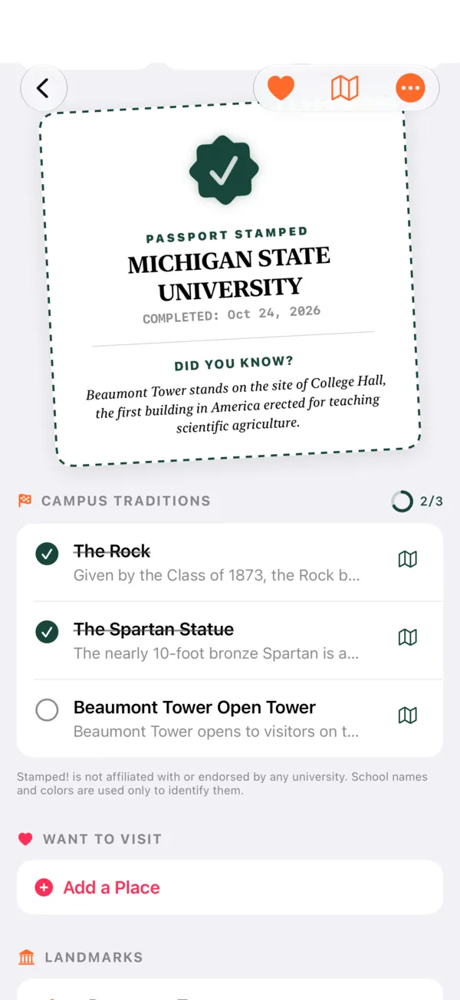
收集 · 你的护照
全部收集齐。
每到一处地标就获得一枚印章，看着护照一座城市、一个国家地被填满。盖满一座城市的所有地标，就能精通这座城市。
- 首枚印章、夜猫子、周末漫游者等成就
- 一幅记录你所到之处的世界地图
- 校色风格的校园印章
- 分享你的护照，还能用小组件在主屏幕上查看
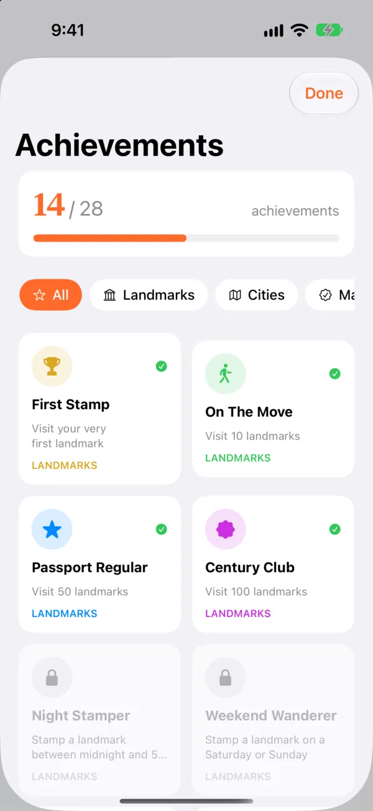
还有这些小细节。
-
iCloud 同步
印章、行程和清单在设备间随你而行。
-
9 种语言
英语、德语、西班牙语、法语、意大利语、日语、韩语、葡萄牙语和中文。
-
人人可用
支持旁白、动态字体和减弱动态效果，还有高对比度和深色模式。
-
保存以供离线使用
把一座城市的照片和故事保存在设备上，乘飞机或出国旅行时也能看。
-
收听
站在任意地标前，听它的故事被朗读出来。
-
分享印章
把城市或校园印章做成图片卡片，发给朋友。
-
Siri 和快捷指令
对 Siri 说“用 Stamped! 打开巴黎”，或把 Stamped! 加入快捷指令。
-
旅游和门票
通过 GetYourGuide，查找任意城市地标的旅游项目和门票。
-
历史照片
来自美国国会图书馆的美国地标老照片和图纸。
你的护照在等你。
2,400 多处地标，每处一枚印章。iPhone、iPad、Mac 和 Apple Vision Pro 免费使用。
请查看你的邮箱。
点按邮件中的链接确认，即可完成订阅。
如果新标签页要求验证你不是机器人，请先完成验证。
喜欢 Stamped! 吗？打赏一下，帮助我们不断加入新城市。